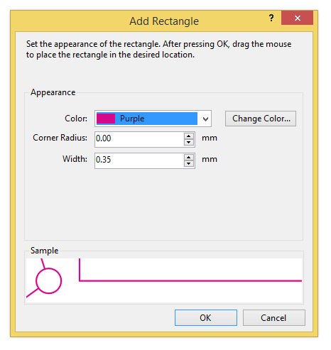

Add/Rectangle
Adds a special item that is a rectangle. The color and width of the line is customizable.
First, you customize the appearance of the rectangle:

You can customize the appearance of the rectangle on the map as follows. A preview of the selected options appears in the "Sample" box, next to a control circle (for scale).
Color: Select the color of the rectangle. You can select one of the predefined colors from the list. If you select "Purple", the color of the rectangle will match the purple color used for the rest of the course (which can be set through the Customize Appearance command.)
Change Color: If you wish to select a color other than the predefined colors in the list, click this button and choose the amount of Cyan, Magenta, Yellow, and Black in the color that you want.
Corner Radius: If you enter a size greater than zero, than the corners of the rectangle will be rounded by this amount. If you leave the size as zero, the rectangle corners will be square.
Width: Enter the width of the line in mm.
After clicking "OK", draw the rectangle on the map with the mouse as follows:
- Press and hold the left mouse button at one corner of the rectangle.
- Move the mouse to the diagonally opposite corner, and release the mouse button.
By default, the rectangle appears on all courses. If you wish it to appear only on some courses, use the Item/Change Displayed Courses command.